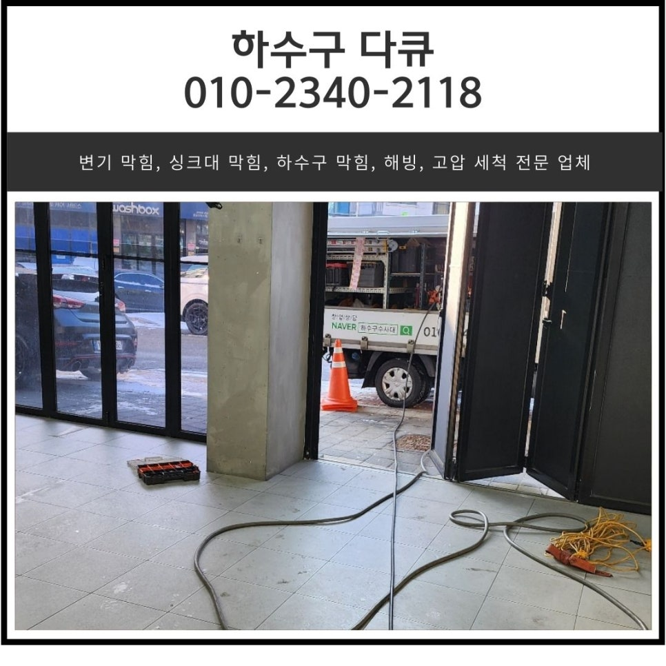
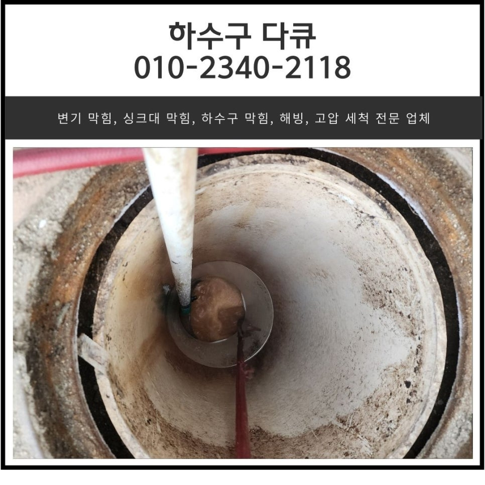
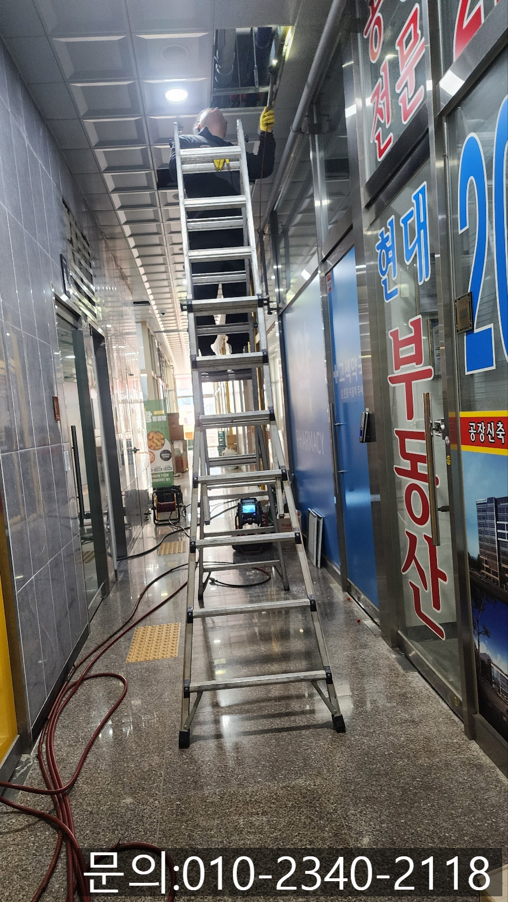
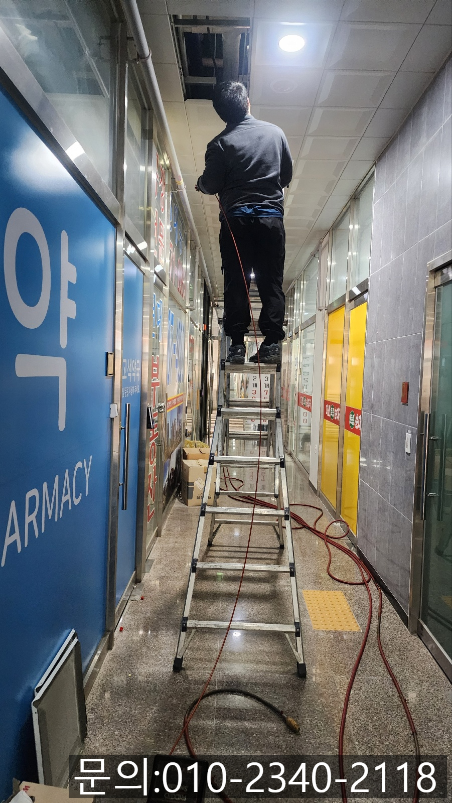
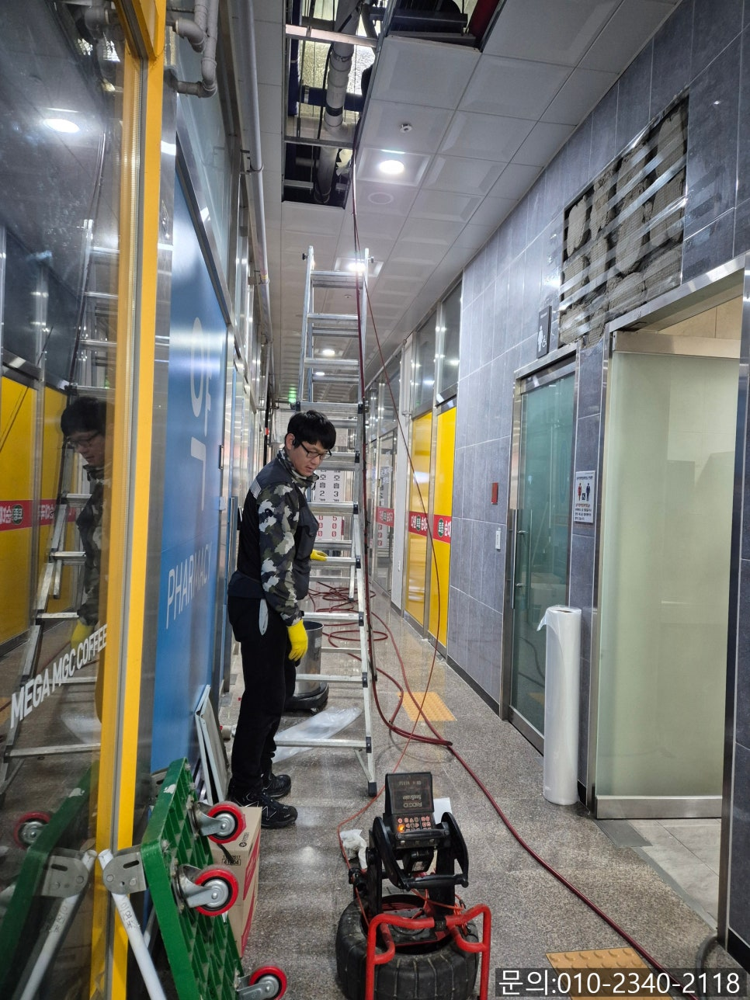
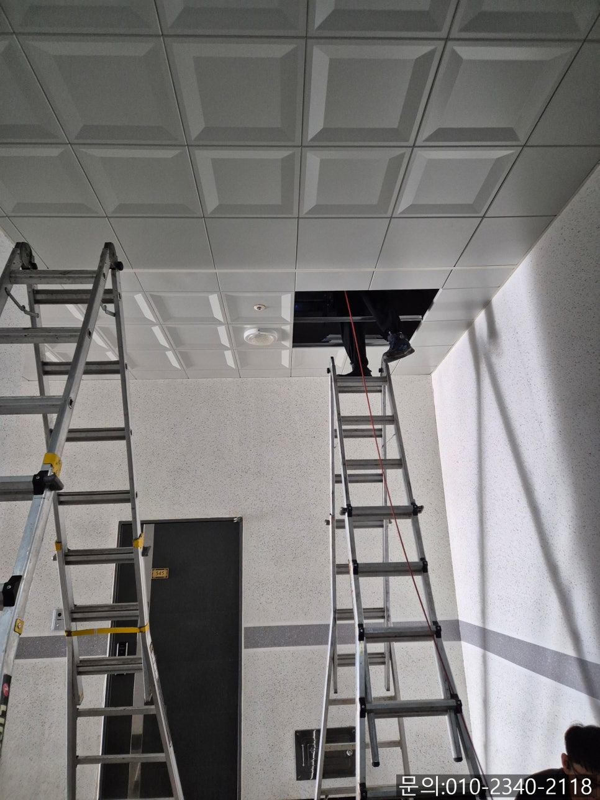
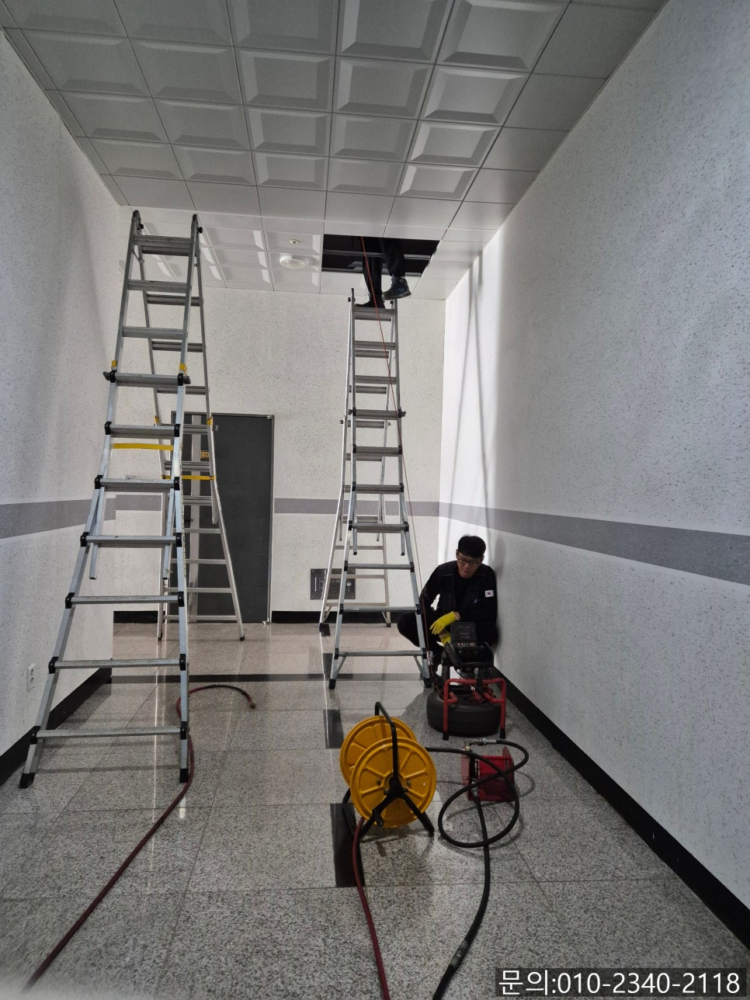

🏠 벌음동 화장실 바닥 막힘 오산 두곡동 매장 하수구 역류 고압세척
오산 하수구막힘 전문 시공 후기

📋 작업 개요
- 위치: 오산
- 서비스 유형: 하수구막힘, 배관막힘, 맨홀막힘, 역류해결, 뚫는업체, 배관청소, 고압세척
- 작업 일시: 2025. 2. 17. 22:08
- 업체명: 하수구수사대 (010-5615-2118)
🔍 문제 상황
안녕하세요.
탑동 하수구 막힘, 오산 두곡동 화장실 배관 역류 고압세척 전문 업체 하수구 다큐입니다.
여러 가게가 몰려있고, 많은 손님들이 사용하는 건물의 경우 탑동 상가 하수구 막힘이 발생하게 되면 명확하게 어느 곳이 문제라고 콕 집어서 얘기하기 쉽지 않습니다.
상가 건물에 식당이나 카페들이 몰려있다 보니, 여러 가게에서 음식물 찌꺼기나 기름, 커피 찌꺼기 등이 배수구로 흘러들어가기 때문에 전체적으로 배수구가 막힐 수 있어요.
오늘 소개해 드릴 탑동 상가 하수구 막힘 현장 역시 연락을 받고 현장에 도착했을 때는 이미 하수구에서 역류가 일어나고 있는 상태였습니다.
건물 2층에 위치한 화장실 바닥에서 역류가 일어나고 있는 상태이다 보니 건물 1층에서 사다리를 타고 올라가 점검을 시작했습니다.
상가 건물 하수구의 경우 메인을 중심으로 가지배관들이 모두 연결되어 있다 보니 한 개만 뚫는다고 해서 문제가 모두 해결되는 것이 아니기 때문에 문제가 발생된 부분과 연결된 부분을 점검해야 하다 보니 작업의 양이 많을 수밖에 없습니다.

🔎 원인 분석
💡 전문가 진단: 정밀 진단 장비를 사용하여 슬러지의 고착 여부를 판명하고 타격/세척 작업을 실시했습니다.
건물의 1층에서 사다리를 놓고 여러 배관을 점검하던 도중 문제가 되는 부분을 찾아낼 수 있었어요.
사다리를 타고 올라가 내시경 카메라를 진입시켜보니 기름 슬러지로 인해 꽉 막힌 배관을 찾아낼 수 있었습니다.
고객님께 문제의 배관 내부의 상태를 확인 시켜 드린 다음 스케일링 작업을 진행하기로 했어요.
아무래도 배관 내부에 기름 슬러지가 가득 차 있는 상태에서 청소작업을 하게 되면 기름 슬러지가 바닥으로 쏟아지기 때문에 비닐을 이용해 보양 작업을 진행한 뒤 청소를 진행했습니다.
1층 천장에서 배관에 쌓인 기름 슬러지를 남김없이 제거했지만 통수가 제대로 진행되지 않는 걸 확인할 수 있었어요.
아무래도 건물에서 외부로 이어지는 배관이 문제일 것으로 생각한 두곡동 하수도 배관 역류 고압세척 전문 업체 하수구 다큐는 건물 밖으로 나가 외부 배관을 점검하기로 했습니다.
내시경 카메라를 진입시켜보자 예상했던 대로 기름 슬러지가 배관을 꽉 막고 있어 건물에서 사용한 물이 외부로 빠져나가지 못하는 상태였습니다.

🔧 작업 과정
두곡동 하수도 배관 역류 고압세척 전문 업체 하수구 다큐는 외부와 연결된 배관의 경우 배관의 크기도 크고 길이도 길다 보니 고압세척 장비를 이용해 이물질을 모두 제거하기로 했습니다.
고압세척 장비의 경우 강력한 물줄기로 기름 슬러지나 기타 이물질을 청소하는 장비에요.
우리가 사용하는 수도의 압력은 3~5bar인데, 고압세척의 경우 차량에 설치된 물탱크에 많은 양의 물을 모아 200~500bar의 강력한 압력과 분당 30리터 이상의 물을 쏟아내 이물질을 제거하면서 청소를 진행하게 되는데요.
맨홀 아래쪽에 위치한 배관 내부로 장비를 바로 진입시킬 수 없다 보니 파이프를 이용해 길을 만들어 고압 노즐을 진입 시켜 진행합니다.
높은 압력을 사용해 청소하는 장비이지만 워낙 많은 기름 슬러지가 물의 흐름을 방해하고 있는 상태이다 보니 작업 시간이 오래 걸릴까 봐 고객님께서 걱정을 많이 하셨지만 꼼꼼하게 작업하는 하수구 다큐를 보시고는 시간이 많이 걸려도 괜찮으니 깨끗하게 뚫어달라고 말씀하셨어요.
두곡동 하수도 배관 역류 고압세척 전문 업체 하수구 다큐가 반복해서 작업을 진행하자 점차 배관이 모습을 드러내기 시작합니다.
고압세척을 진행하면서 밖으로 빠져나오는 기름 슬러지 덩어리들은 뜰채를 이용해 건져서 제거해 주고 다시 고압세척을 진행했어요.
여러 차례 내시경 카메라로 살펴보며 작업을 진행하자 이물질이 모두 제거되고 깨끗해진 배관을 확인할 수 있었습니다.
물을 사용해도 문제없이 잘 흘러가고, 역류하지 않는 것까지 꼼꼼하게 확인하고 작업을 마칠 수 있었고요.
연락 주신 고객님께서도 하수구 다큐로 작업을 맡기길 정말 잘한 것 같다고 말씀해 주셔서 기분 좋았던 현장입니다.
상가의 경우 불특정 다수가 사용하다 보니 하수구 막힘이 자주 일어날 수밖에 없는 환경인데요.
하수구 막힘을 해결하기 위해 셀프로 뚫어보시는 것도 방법이지만 상가의 경우 직접 해결하기는 사실상 어려운 환경이다 보니 전문가의 도움을 받아 완벽하게 해결하시는 게 가장 현명한 방법입니다.


✅ 작업 완료
지금 하수구 막힘으로 고민하고 계시나요?
하수구 다큐와 함께 해결해 보세요.
경기도 화성시 동탄대로 677-10 7층 715-A10호




⚠️ 하수구 배관 막힘 예방 및 관리 가이드
- ✅ 머리카락, 비닐, 물티슈 등 물에 분해되지 않는 이물질은 하수구 유입을 절대 금지해 주세요.
- ✅ 하수구 거름망을 씌우고 모여진 이물질은 주기적으로 쓰레기통에 바로 비워주셔야 합니다.
- ✅ 배관 노후가 심할 경우 이물질이 더 쉽게 걸리므로 주기적인 배관 세척(고압세척 등)을 권장합니다.
- ✅ 작업 후 1년 이내 재발 시 하수구수사대에서 무상 A/S 보증 서비스를 제공합니다.
💡 핵심 정리
- 확실한 장비 작업(내시경 점검 및 샤프트 스케일링)으로 원인을 뿌리 뽑습니다.
- 작업 후 1년 이내에 동일한 부위 재발 시 100% 무상 A/S 서비스를 보장합니다.
- 서울 · 경기 · 인천 전 지역에 24시간 언제든 긴급 출동할 수 있도록 항시 대기 중입니다.
❓ 자주 묻는 질문 (FAQ)
🚨 오산 하수구막힘 문제로 고민이신가요?
정확한 원인 진단과 확실한 시공으로 재발 없는 해결을 약속드립니다.
24시간 긴급 출동 | 서울 · 경기 · 인천 전지역 | 1년 내 재발 시 무상 A/S